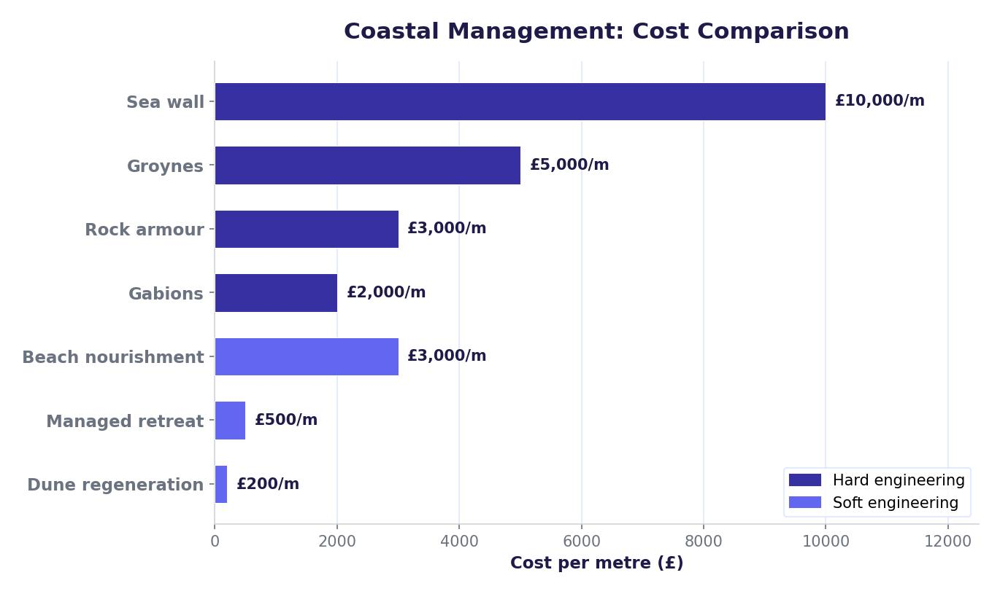

Why Manage the Coast?
Coastal erosion threatens homes, businesses, roads and farmland. In places where people live and work near the sea, authorities must decide whether to protect the coastline and how. There are two main approaches: hard engineering and soft engineering.
Hard Engineering
Hard engineering uses man-made structures to deflect or absorb wave energy. These methods are effective but expensive and can look unattractive. They often increase erosion further along the coast.
Sea Walls
A sea wall is a concrete or stone barrier built along the base of a cliff or along the seafront. Recurved sea walls reflect waves back on themselves. They provide excellent protection and act as a flood barrier, but they cost around £5,000 per metre, need regular maintenance, create a strong backwash that can erode material at the base, and many people find them ugly.
Groynes
Groynes are barriers built at right angles to the beach. They trap sand and shingle that would otherwise be moved along the coast by longshore drift, building up a wide beach that absorbs wave energy. They cost up to £5,000 per metre. However, they starve beaches further along the coast of sediment and can look unattractive.
Rock Armour (Rip-Rap)
Large boulders are placed at the base of a cliff. They absorb wave energy and reduce the force of the backwash by encouraging water to percolate between the rocks. Rock armour costs £1,000–£3,000 per metre and is quick to build. However, it looks unattractive and makes beach access difficult.
Gabions
Gabions are wire-mesh cages filled with rocks or pebbles, placed at the back of sandy beaches. They absorb wave energy as water flows into the cages. At around £350 per metre they are cheap and do not block longshore drift. However, the wire cages rust and have a short lifespan, and damaged gabions look unsightly.
Hard engineering methods cannot stop waves — they can only deflect or absorb some of their power. They tend to be expensive, need regular maintenance, and often increase erosion in other locations along the coast.

Soft Engineering
Soft engineering works with natural processes rather than against them. These methods are generally cheaper, more sustainable and less visually intrusive than hard engineering.
Beach Nourishment
Sand and shingle are imported from elsewhere and added to the beach. A wider beach slows waves and reduces cliff erosion. It costs about £3,000 per kilometre but must be repeated regularly because longshore drift moves the new material away. Transporting the material can also cause pollution.
Beach Reprofiling
Material from the lower beach is moved to the upper beach to build up its height and absorb wave energy. This is cheap and simple but only works when wave energy is low and needs to be repeated continuously.
Dune Regeneration
Sand dunes are strengthened by planting vegetation such as marram grass, which binds the sand together. Wooden boardwalks stop people trampling the dunes. Dunes act as a natural barrier against flooding and erosion. Planting grass is cheap (about £2,000 per 100 metres), but protection is limited to a small area and the process needs constant repetition.
Managed Retreat
Managed retreat (also called coastal realignment) involves removing existing defences and allowing the sea to flood the land behind. The flooded land becomes salt marsh, which slows waves and reduces erosion naturally. New habitats are created. However, farmland and sometimes homes are lost, and choosing which areas to sacrifice can cause conflict.
Hard engineering is usually more expensive, lasts a shorter time, looks unattractive and is unsustainable — but it provides strong, immediate protection. Soft engineering is cheaper, longer-lasting, more natural-looking and sustainable — but it may not provide enough protection for high-value areas like towns. In practice, most coastal management schemes use a combination of both.
Case Study: Lyme Regis
Lyme Regis is a small coastal town on the Jurassic Coast in Dorset, southern England. It faces serious problems from coastal erosion and landslips because the cliffs are made of unstable clay and limestone. The town is an important tourist destination, and its buildings, harbour and seafront are at risk.
The Problems
- Cliffs made of soft, unstable clay are prone to slumping and landslides, especially after heavy rain.
- Powerful waves from the English Channel attack the coastline, eroding the base of the cliffs.
- Longshore drift removes beach material, leaving the cliffs more exposed to wave attack.
- The town’s harbour, seafront businesses and residential properties are all at risk from erosion and flooding.
Management Strategies Used
Lyme Regis has used a combination of hard and soft engineering at a total cost of £43.4 million:
- New sea wall and promenade — built along the seafront to reflect wave energy and protect buildings behind.
- Stone groynes — replaced the old wooden groynes. Stone lasts much longer and traps sediment to build up the beach.
- Rock armour — placed in the harbour area and along vulnerable sections to absorb wave energy.
- Beach nourishment — sand was imported from France to widen the beach. A wider beach absorbs more wave energy, reducing cliff erosion.
- Cliff stabilisation — steel nails were driven into the cliffs and drainage channels were installed to remove excess water, reducing the risk of landslips.
Lyme Regis spent £43.4 million on a combination of hard and soft engineering. The stone groynes replaced old wooden ones and last significantly longer. Sand for beach nourishment was imported from France.
How Effective Has It Been?
- Positives: The new defences have survived several stormy winters. Wider beaches have increased visitor numbers, boosting seafront businesses. The harbour is better protected, benefiting fishermen and boat owners.
- Negatives: Increased visitor numbers have led to conflict with local residents over litter and traffic congestion. Some people feel the new defences spoil the natural coastal landscape. Cliff stabilisation may prevent landslips that would otherwise reveal important fossils.
No single strategy can protect a coastline on its own. Sea walls reflect wave energy but do nothing to replace lost beach material. Groynes trap sediment but do not stop cliff slumping. Beach nourishment absorbs wave energy but is washed away without groynes to hold it. By combining hard and soft approaches, Lyme Regis addresses multiple threats at once.